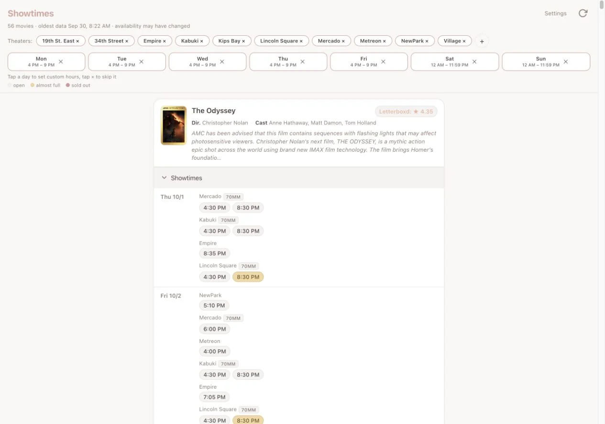
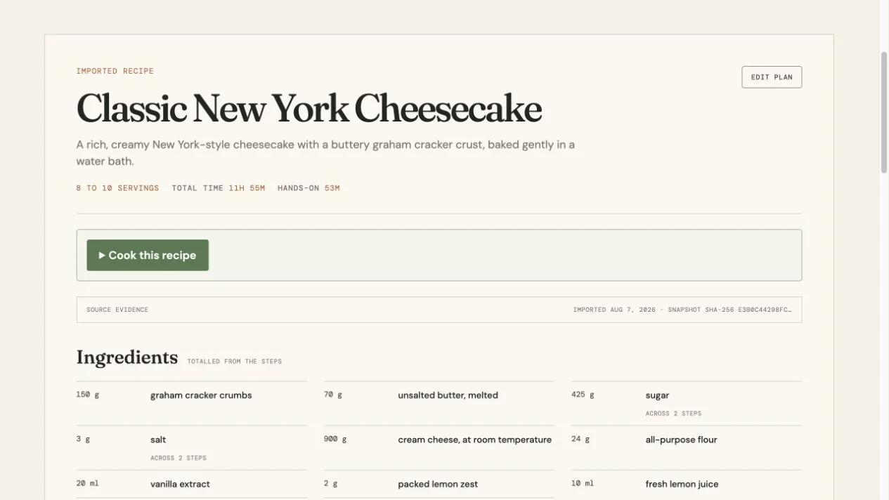
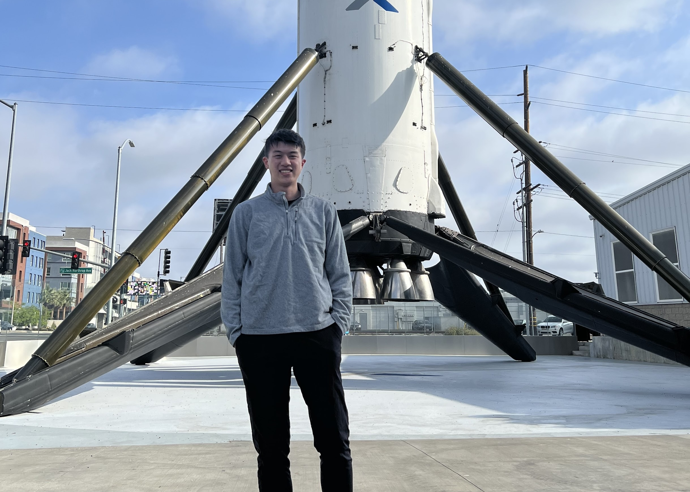
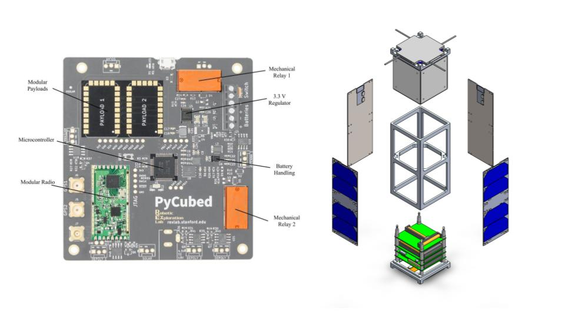
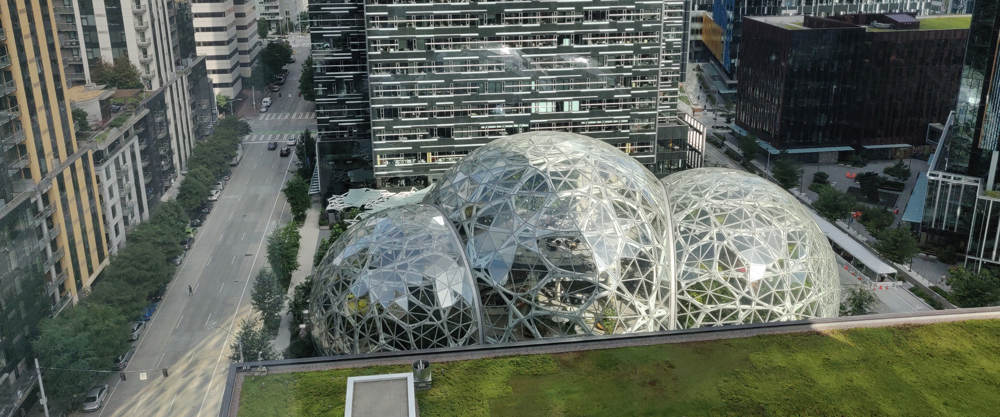
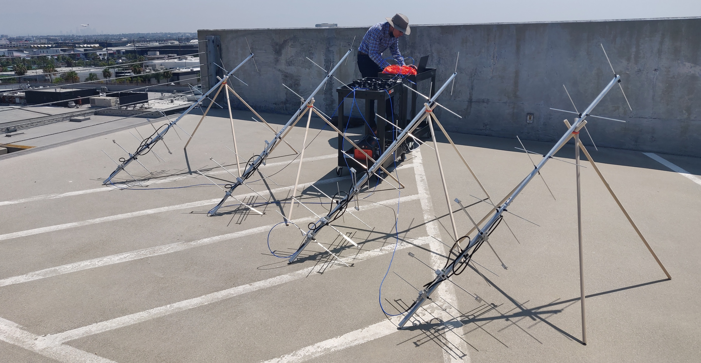
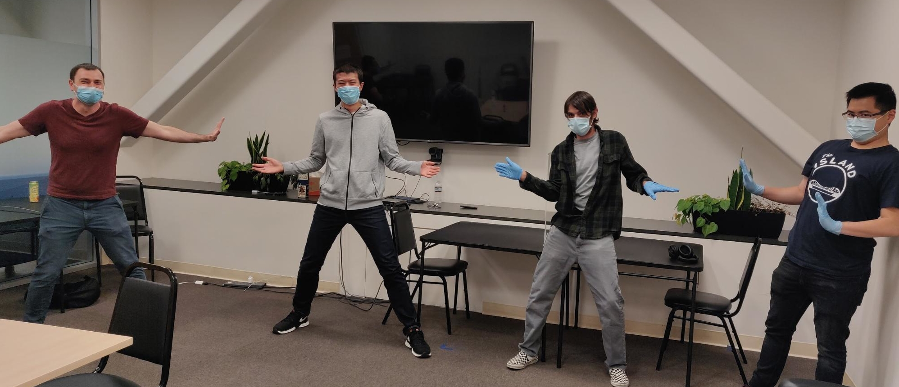
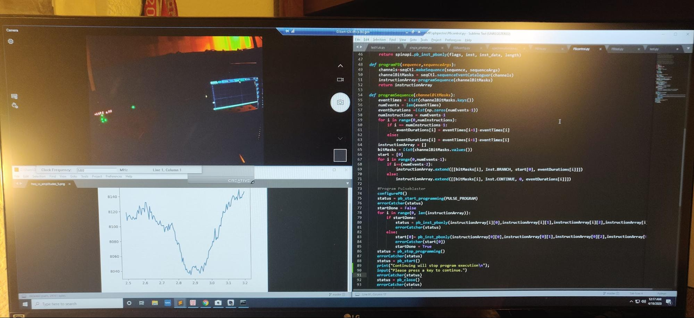
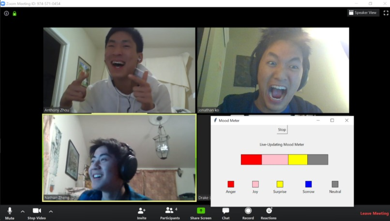
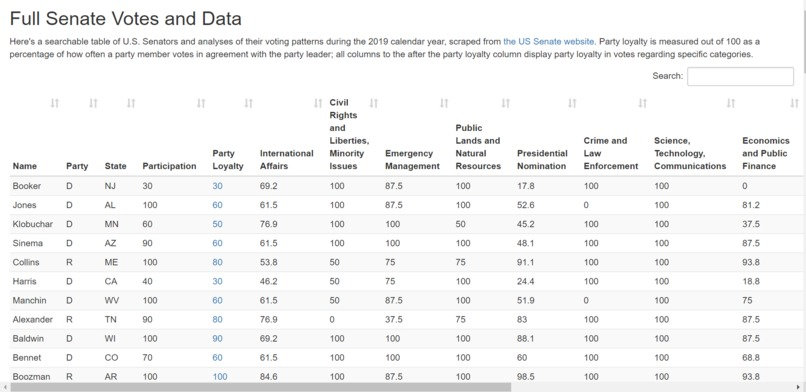

Showtimes
MoviesFind a movie, a theater, and a time that works. AMC showtimes for the week, all in one place.
Software engineer · New York
I like building useful little things for everyday life.
Previously, I worked on data skipping in Delta Kernel Rust and cloud storage infrastructure at Databricks.
A few things I’ve made and worked on.

Find a movie, a theater, and a time that works. AMC showtimes for the week, all in one place.

Turn recipes into a plan. Shopping lists, parallel tasks, and a cooking schedule that keeps everything on track.
Data skipping · Rust
I owned read and write statistics for data skipping—helping query engines skip files they don’t need to read.
I delivered features end-to-end for Delta Kernel Rust, supporting Databricks products and external engines such as delta-rs. My work also includes timezone-aware partition parsing, expression APIs, and storage listing behavior.
Databricks · 2023–2025
I built and scaled the services behind Databricks managed storage. They provision and assign storage buckets, manage access credentials, and track cloud account capacity across AWS, Azure, and GCP.
My work kept customer signup and storage provisioning fast as the service grew to 1M customers.
I load-tested 150k+ storage buckets to find database bottlenecks, then improved indexing, batching, and back-pressure. These changes brought P95 signup latency from roughly 2 seconds to under 200 ms at peak launch traffic.
Redesigned bucket deployment coordination to eliminate redundant database work and lock contention. The change cut transaction volume by about 55×, reduced lock time by about 35×, and shortened reconciliation from roughly 65 seconds to 29 seconds.
Added a lightweight fullness signal for storage buckets so assignment could avoid expensive fleet scans. Refresh time dropped from hours to seconds while assignment latency stayed under 300 ms at 100k-scale tests.
Berkeley · 2022–2024
My master’s research in speech synthesis: a 0.4M-parameter articulatory model with 4.9× faster CPU inference.
Word error rate improved by 1.63 percentage points to 6.67%, and mean opinion score rose by 0.16 to 3.74, using 0.4M parameters versus a 9M-parameter baseline.
Read my thesis
SpaceX · 2022
Built test infrastructure and spectral analysis tools for reaction wheels, reducing test time by 10×.
As a software engineering intern, I worked on torque and energy margin verification, using Short-Time Fourier Transform analysis to detect bearing faults before flight.

QubeSat · 2019–2023
Designed the CubeSat structure and deployment mechanism for a mission carrying quantum gyroscopes.
See the launch Project websiteAs an SDE Intern at AWS, I worked on AWS Marketplace, architecting and implementing full-stack tooling to automate ML product private offer creation. I built RESTful APIs with database integration and established a robust CI/CD pipeline with automated testing.

As a Research Intern, I led the design and construction of a custom 4-antenna array system for tracking Lincoln Experimental Satellites (LES). By developing and optimizing a Blind Adaptive Beamforming algorithm, I improved signal-to-noise ratio by 30%.

As an Engineering Intern, I worked on optical systems for DNA sequencing instruments. I developed instrument control software in Python that automated optical system calibration and alignment, and built a data processing pipeline integrating multiple sensors and hardware interfaces.

As a Software Research Assistant at Lawrence Berkeley National Laboratory, I developed an automated testing framework in Python/MATLAB that reduced experiment runtime by 90% for nitrogen-vacancy center research in diamond for nuclear magnetic resonance experiments.

During quarantine, professors lost the ability to "read the room" over Zoom, so we built Mood for Zoom—a real-time aggregate mood visualization tool using Google Cloud Vision API. Won 2nd Place Overall and an honorable mention for Best Use of Machine Learning.

View on DevpostA tool that scrapes senate.gov to visualize voting patterns and party loyalty, making congressional voting records more transparent and accessible. Built with Beautiful Soup, Python, and jQuery/JavaScript.

View on DevpostAt COSMOS UCSD, I designed a walking robot from scratch with an insectoid design—circuit design, Raspberry Pi code with Adafruit PWM drivers, and 3D printed chassis. In the final time-based race, our robot beat competitors by 50%.
Beyond the keyboard
I grew up in the Bay Area, studied EECS at Berkeley, and now call New York home.
Outside of building things, you’ll find me playing soccer or volleyball, watching a movie, taking photos, or baking something.
Always happy to chat